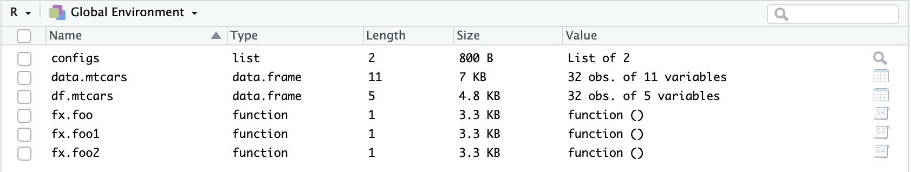

fx.foo <- function(){}
fx.foo1 <- function(){}
fx.foo2 <- function(){}Tips on Working with R’s environment
After working extensively with R in the past few years, I have a few tips that can improve user’s experience while searching within R’s environment (see below).

Starting name of an object according to its type
We often encounter a number of objects when analyzing data with R, such as variable, data (such as data.frame, list), function etc. One trick I often do is to start an object’s name with an abbreviation of its type, or a ‘prefix’. For instance, I would start a function’s name with fx. .
We can retrieve name of all functions in the environment by typing the following command in R Console:
ls(pattern = "fx.")[1] "fx.foo" "fx.foo1" "fx.foo2"Differentiating Raw and Sorted Data
Often we would like to keep raw and sorted data in the environment, as we might mess up with the sorted one and we would like to create a new sorted one quickly. I often differentiate them by checking the start of their name:
# Suppose mtcars is our raw data (which has 11 columns)
data.mtcars <- mtcars
# Suppose our sorted data contains the first five column of our raw data
df.mtcars <- data.mtcars[,1:5]
dim(data.mtcars)[2] # No. of columns in our raw data[1] 11dim(df.mtcars)[2] # No. of columns in our sorted data[1] 5Here raw data start with data., while sorted data start with df. - an easy way to distinguish them! This is a nicer (and quicker) way for retrieving a specific data.frame object in R’s environment when I type data. in R’s console, and a small box next to it shows relevant functions and objects. Then I can simply click tab button to select!
With this nice way to naming objects in R’s environment, it is thus easier for us to remove unnecessary objects at once. In this example, our R’s environment has:
ls()[1] "data.mtcars" "df.mtcars" "fx.foo" "fx.foo1" "fx.foo2" Suppose I want to remove all customized functions I’ve imported (those start with fx.). Then I can run the following command:
rm(list=ls(pattern = 'fx.'))Here I use rm() for removing objects in R’s environment. I specify a character variable called ‘list’, which is a list of object names that has a pattern of ‘fx.’ in R’s environment.
Then I check how my current R’s environment looks like:
ls()[1] "data.mtcars" "df.mtcars" Configurations
When cleaning and analyzing data, we create a number of variables that contain elements to be iterated over time. For instance, I might need to clean a dataset based on the set of values (or ‘keys’) in one of its column. In this case, I would create a list variable called configs that stores all the keys (I was inspired by another software I used during data collection).
configs <- list('sessions'=c('ABC', 'DEF', 'XYZ'),
'conditions'=c('control', 'modified'))
configs$sessions
[1] "ABC" "DEF" "XYZ"
$conditions
[1] "control" "modified"The configs contains two sets of keys: sessions for three sessions and conditions for two conditions. Two advantages for storing the keys this way:
Easily traceable: I only search through the key in
configsrather than the whole environmentEasily changeable: if, for some reasons, I would need to change the keys for running the code, I could simply change them here rather than tracing every related part of the code.
Note that I don’t name all keys and its elements with a capital letter - easy to type without pressing the shift key on your keyboard whenever retrieving them!
Freeing up unused R memory
Often I make sure I have sufficient amount of memory in R’s environment. To do so I can either the option next to ‘Import Dataset’ in Environment tab, then select ‘Free unused R memory’, or I can run with gc().
Backing up and Loading saved R’s environment
Often I do some programming with R, I start with a command of loading saved R’s environment as .RData with load() function, and ends with save.image() to save my progress as .RData.